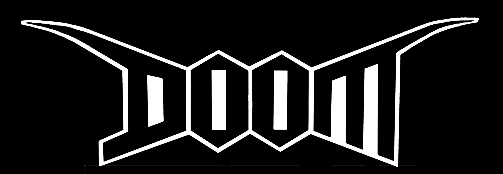

Портфолио

Альбом Inner Circles
Дум сладж альбом об усталости и ненависти, с монументальными, злыми рифами и искажённым шепчущим вокалом, что звучит как крик из бездны.
Doom Metal / Sludge
Pastel Tones Mysticism
Обложка для моего EP-альбома, выполненная в цифровой графике с использованием мрачных пастельных тонов.
Stoner Metal / Cover
Лого Righteous Jawbone
Логотип в дум метал стиле, выполненный от руки, вдохновлённый библейской историей о Самсоне.
Doom Metal / Logo